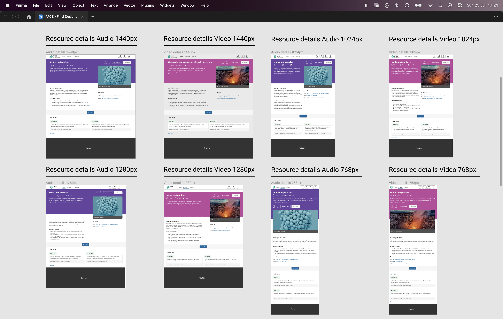
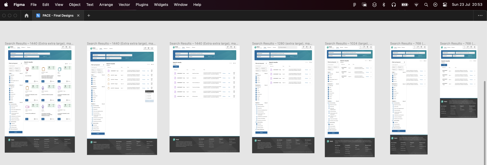

I was the UX lead on the development of the MVP, I managed the design system and the generation of digital assets, while maintaining alignment with user requirements, integration of social platforms and stakeholder business objectives.
www.pearson.com
Figma source file page for breakpoints of asset detail screens
 Admin user flow discovery for Pearson client management
Admin user flow discovery for Pearson client management
 Teacher high level user flow
Teacher high level user flow
 Teacher user flow for integrating content into MS Teams and Google Classroom
Teacher user flow for integrating content into MS Teams and Google Classroom
 Testing content ingestion and intergration with assessment functionality for MS Teams
Testing content ingestion and intergration with assessment functionality for MS Teams
 Testing content ingestion and intergration with assessment functionality for Google Classroom
Testing content ingestion and intergration with assessment functionality for Google Classroom
 Returned search result pages from teacher search querry
Returned search result pages from teacher search querry
 Teacher saved assets page
Teacher saved assets page
 Search results grid and list view breakpoints
Search results grid and list view breakpoints
 Search / Auto-complete functionality
Search / Auto-complete functionality


Detail page for an audio asset

Assigning an asset to a class popus functionality